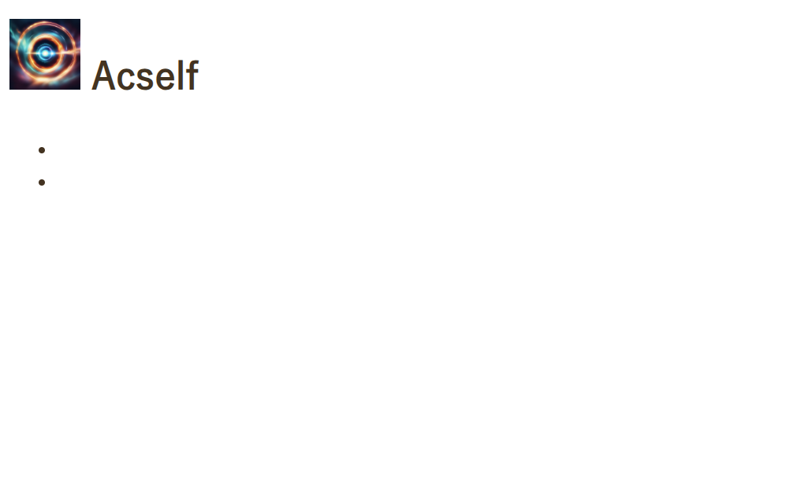

Bethind-The-story of this website
きっかけ
一番はじめのきっかけは高校1年のときのコロナが始まったときだった． 私は親の本棚にあるpythonの教本をとり，プログラミングの勉強を始めた． しかし，途中からエラーの発生原因がわからなくなり，挫折．大学1年に持ち越すことになる．
webサイトを作ろうと思うまで
話は大学1年へ．なんとなくプログラミングをしていたら急にwebサイトを作りたくなった． 自分の生活の記録を自分で作ったページに掲載したかったのだろう．しかし，ここでも挫折 webデザインが難しすぎた．そのとき作ったサイトの写真が↓．
クリエイティビティのかけらもないサイトが出来上がった．．もうちょっとうまくやれたでしょ． そんなわけでここから2年くらい放置されます．
webサイトは目的ではなく手段
大学3年になり，webサイト制作はやめていたが，競技プログラミングやUnreal Engine 5などで 開発自体はちょくちょくやっていた．ここらへんの学習の過程を発信したくなった．べつに発信すること自体は ほかのnoteやquittaなどの記事サイトで公開すればいいのだが，そこはやりたいことを優先し，自分でwebサイトをつくる方針にした．
製作期間:1週間(index.htmlの制作からgithubの公開まで)
工夫した点
デザインは来た人が読書している感覚になるようなサイトを目指した．あとはかっこよさだけで選んでいる．
苦労した点
モチベーションが湧くまでが一番大変だった．その話はまた今度
非常に助かったUdemyの講座
The Complete Full-Stack Web Development Bootcampこれがなかったらもっと時間かかっていたし，また挫折していたかも．